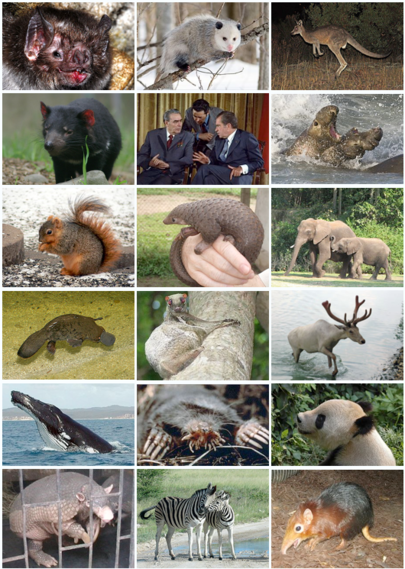

Úvod
Savci (Mammalia), dříve ssavci, jsou třída obratlovců, která se v současné době vyskytuje téměř po celém světě. Jejich hlavním spojovacím znakem je výživa mláďat produktem modifikovaných kožních žláz, tedy kojení mláďat (mléčné žlázy – latinsky mammae – odtud název Mammalia). Dalším společným znakem celé skupiny je srst vyjma řádů kytovci, luskouni a sirény; mláďata jmenovaných jsou však také osrstěná. Všichni savci jsou teplokrevní. Tato skupina dosáhla mezi ostatními živočichy nejvyšší vývojové úrovně nervové soustavy. Věda, která zkoumá savce, se nazývá mammalogie nebo také teriologie.
Na světě žije kolem 6500 druhů savců zařazených do 1250 rodů, 152 čeledí a až 46 řádů. Hlodavci tvoří přibližně 40 % druhů a letouni zhruba 20 % druhů savců. Rozmanitost savců je obrovská. Existují mezi nimi druhy vážící sotva několik gramů (rejsek bělozubka nejmenší) a naopak druhy vážící mnoho desítek tun (na souši byl rekordní rod Paraceratherium, v mořích recentní kytovec plejtvák obrovský).
> Společné znaky savců
- mají stálou tělesnou teplotu, nejčastěji mezi 35 °C až 40 °C
- tělo pokrývá srst, složená z několika typů chlupů (vlníky a osiníky tvoří podsadu, pesíky tvoří zbarvení srsti a hmatové chlupy, což jsou třeba vousy), které se druhotně mohou přeměnit v bodliny, ostny, šupiny a krunýře či zcela vymizet
- pokožka obsahuje mnoho žláz, zejména potních a mazových, jejichž přeměnou vznikly i žlázy pachové a mléčné
- naprostá většina savců rodí živá mláďata, která jsou po narození krmena mateřským mlékem; zárodek prodělává vývoj v těle samice, vyživován prostřednictvím placenty; existují také vejcorodí savci (ale i ti kojí mláďata)
- tělní dutina je rozdělena na břišní a hrudní část, které jsou od sebe odděleny plochým svalem zvaným bránice, který se vydatně podílí i na dýchacích pohybech
- krevní oběh je zcela uzavřený, cévní soustava má pouze levý oblouk aorty a dokonale čtyřdílné srdce, červené krvinky jsou bezjaderné
- na vnější zvukovod nasedá různě tvarovaný ušní boltec, jehož velikost je úměrná sluchovým schopnostem jednotlivých druhů (druhotně může chybět)
- savci jsou odděleného pohlaví s občasnou pohlavní dvojtvárností (velikost, zbarvení, parohy, atd.)
- z mnoha znaků na kostře jsou nejdůležitější: dva týlní hrboly, sedm krčních obratlů (ale existují i výjimky – kapustňáci a lenochodi), tři sluchové kůstky, spodní čelist tvořená jedinou kostí a připojená k lebce druhotným čelistním kloubem na kosti spánkové
- s mohutným rozvojem koncového mozku, zejména kůry na povrchu mozkových polokoulí, souvisí rozvoj nervové činnosti a složitého chování savců
- mají čelisti obsahující třenové zuby, stoličky, řezáky a špičáky
> Fylogeneze a evoluce savců
Savci (v užším smyslu slova) se vyvinuli ze savcovitých plazů větve Synapsida (snahy některých vědců míří dokonce k synonymizaci Mammalia a Synapsida, aby bylo jasné, že se savci nevyvinuli z plazů, ale pouze z plazům podobných živočichů). Mezi starobylé formy blízké pravým savcům patří například raně jurský rod Megazostrodon z jižní Afriky a podobně starý rod Morganucodon z Evropy a Asie. První praví savci se objevili nejpozději asi před 180 až 165 miliony let v juře, od roku 2000 bylo učiněno mnoho významných paleontologických objevů pradávných forem. Fyziologie primitivních jurských savců byla ještě do značné míry podobná fyziologii některých plazů. Ukazuje se například, že savci pečovali o svá mláďata již v době střední jury (asi před 170 miliony let), což dokládá série stop malého savce z Argentiny, nesoucího zřejmě na hřbetě svá mláďata. Podobný objev pochází i ze spodní jury Arizony (fosilie mláďat rodu Kayentatherium). Unikátní nálezy také odhalují, že někteří savci se živili masem dinosaurů (lovili jejich mláďata nebo pojídali maso zdechlin). Savci představovali v období druhohor poněkud upozaděnou vývojovou skupinu terestrických obratlovců, prošli významnou evoluční radiací až po vyhynutí dinosaurů na konci křídy před 66 miliony let. Druhohorní savci podstoupili výraznou evoluční kompetici již v době dinosaurů, kdy drtivá většina z nich nedosahovala hmotnosti vyšší než 100 gramů. V průběhu střední jury se u savců patrně objevila endotermie, která je pro tuto skupinu nyní charakteristická. V průběhu hromadného vymírání na konci křídy před 66 miliony let sice velké množství savčích druhů vyhynulo (v Severní Americe to mohlo být až kolem 93 %), dostatečné množství přežilo a na počátku paleogénu začala významná evoluční radiace v nyní již uprázdněných ekosystémech. Savci začali zabírat niky uvolněné vyhynulými dinosaury a v průběhu stovek tisíc až jednotek milionů let vytvořili větší a specializovanější formy. V prvních tisíciletích až desítkách tisíc let po dopadu planetky do oblasti dnešního Mexického zálivu přežila tzv. post-apokalyptická savčí fauna, zahrnující obvykle nejodolnější formy savců. Z nich se později vyvinuli předkové všech současných savčích vývojových linií, od rejsků přes primáty až po kytovce.
Dnes žijící savci tvoří korunovou skupinu živorodých a zvláštní řád ptakořitných, který je podstatně starší. Mnoho vyhynulých řádů (např. Multituberculata) má blíže k živorodým než k ptakořitným. Živorodí se dělí na dvě větve – vačnatci a placentálové. V průběhu druhohor dochází i k vývoji schopnosti sání mateřského mléka, která je dnes typickým znakem pro celou skupinu. První evoluční radiace vývojově primitivních savců nastala již v období rané jury, před necelými 200 miliony let. V době zhruba před 100 miliony lety se odštěpily dvě hlavní větve placentálních savců – Afrotheria (zahrnující řády sirény, damani, chobotnatci, Afrosoricida, bércouni a hrabáči) a zbytek. Ten tvoří zvláštní větev chudozubých, která se oddělila zhruba před 90 miliony let a ostatní savce (skupinu Boreoeutheria). Současné druhy savců jsou potomky převážně nočních druhů, žijících v období druhohor. Plně denní formy savců se začaly objevovat až po vymírání na konci křídy v období počínajícího paleocénu před asi 66 miliony let. Větší savci se objevili už dříve než po miliónu let od události, která vyhubila dinosaury. Mezi první velké savce o hmotnosti v řádu stovek kilogramů patřili v paleocénu zástupci kladu Pantodonta, jako byl například rod Barylambda.
Vědecká studie z roku 2018 dokazuje, že k vývoji unikátně stavěné spodní čelisti savců bylo nezbytné, aby nejdříve došlo k miniaturizaci elementů jejich středního ucha.
> Rozmnožování
Podle způsobu rozmnožování se savci dělí do tří skupin. U všech savců je oplození vnitřní. První skupinou jsou ptakořitní savci (monotremata), jež zahrnují ptakopyska a ježury, a kteří kladou vejce. Ptakořitní mají jeden společný vývod pro močovody, střevo a pohlavní orgány - kloaku. Savci dalších dvou skupin rodí mláďata. První z nich jsou vačnatci (marsupialia), kteří nemají pravou placentu, proto jsou jejich mláďata při porodu nedokonale vyvinutá a „dozrávají“ vně, ve vaku tvořeném na těle samice, dokud nevyspějí. Největší skupinou jsou placentální savci, neboli placentálové (placentalia) – mláďata se vyvíjejí v děloze samice. Mláďata všech savců jsou krmena mlékem, které je vyměšováno mléčnými žlázami samice. Mléko zajišťuje výživu a odolnost vůči nákazám, protože obsahuje cenné protilátky. V jednom vrhu může být od jednoho do dvaceti mláďat.
> Potrava
K udržení konstantní teploty slouží bohatá a výživná strava. Ta je získávána různými způsoby. Někteří savci se živí jinými zvířaty – jedná se o masožravce (zahrnuje i hmyzožravce). Ostatní savci jsou tzv. býložravci. Živí se rostlinami, které obsahují sacharidy jako je celulóza. Velikost zvířete je také faktorem při určování typu potravy. Mnoho savců potlačuje svůj metabolismus a šetří energii v procesu známém jako hibernace. Tento stav nastává pokud neexistují dostatečné požadavky na potraviny v prostředí.
> Anatomie a vzhled
Až na výjimky mají prakticky všichni savci tělo členěné na hlavu, krk, dva páry končetin a ocas. Přesné proporce se však mezi jednotlivými taxonomickými jednotkami mohou výrazně odlišovat v závislosti na typu prostředí, způsobu pohybu a obživy, kterou konkrétní druhy (rody, čeledě) vedou. Částečně funkcionálně segmentovaná páteř savců se vyvíjela komplexně a v závislosti na vývoji jednotlivých linií, vedoucím k různým způsobům života. Tvar páteře je do značné míry korelován s ekologií daného druhu savce.
Některé druhy vyvinuly schopnost letu (netopýři) nebo plachtění (vakoveverka ad.).
Kůže a srst
Kůže savců je dvouvrstevná a výrazně silnější než u většiny dalších obratlovců. Dělí se na škáru a pokožku. Pod škárou se usazuje vrstva tuku, která slouží k izolaci a jako zásobárna živin a vody. Jedinečným savčím výtvorem vyrůstajícím z kůže je srst. Skládá se ze tří typů chlupů. Podsadu tvoří jemnější, kratší a početnější vlníky a osiníky, třetím typem jsou delší a silnější pesíky. Hustota srsti se liší v závislosti na prostředí, v němž konkrétní savci žijí. K nejhustším patří srst vydry říční, která má až 50 tisíc chlupů na cm². Aby savci reagovali na sezónní změny teplot a vyvarovali se přehřátí či prochladnutí, vyměňují obvykle dvakrát do roka alespoň zčásti svou srst línáním. Srst se rovněž mění u mláďat během dospívání.
> Rychlost pohybu některých druhů
- Gepard -- 96–101 km/h (na úseku max. 400 m 112 km/h)
- Antilopa -- 88–95 km/h
- Závodní kůň -- 69 km/h
- Hyena -- 64 km/h
- Delfín -- 50 km/h (max. 64 km/h)
- Kočka -- 48 km/h
- Lachtan -- 40 km/h
- Člověk -- 37,6 km/h (prům. rych. Usain Bolt); (rekord 44,7 km/h)
- Lenochod -- 0,24 km/h